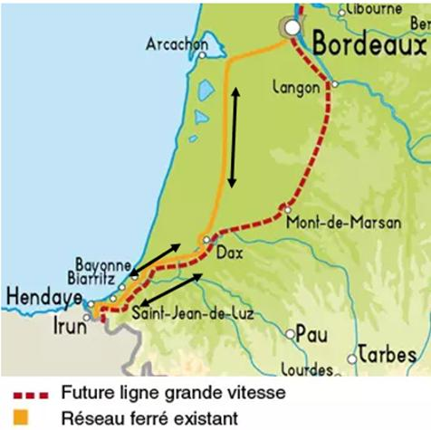

Comment circuleraient les trains de fret ?
De Vitoria à Dax, la ligne est mixte avec une circulation limitée à 200/220km /H pour les trains de voyageurs. Sur le tronçon Dax-Bordeaux-Dax tous les trains de fret devront emprunter la ligne existante vers Bordeaux, car ils ne peuvent circuler sur la LGV.

Où est la « libération de nouvelles capacités » sinon les sillons cédés par les quelques TGV qui n’emprunteront plus la ligne actuelle ?
Ce qu'ils disent :
A long terme, l’objectif est de transférer sur les rails une grande partie du mur de camions qui sature l’autoroute A63 et la nationale 10 au nord de Bordeaux.
Le développement du fret est lié à la connexion future au réseau espagnol et au développement de services tels que les autoroutes ferroviaires, des transports combinés rail-route.
Vérifions les faits.
La France veut imposer la mise en service d’une autoroute ferroviaire avec des wagons Modalohr entre Vitoria (Espagne) et Dourges (nord de la France).
Une autoroute ferroviaire analogue est en service depuis 14 ans entre Le Boulou 5près de Perpignan) et Bettembourg (Luxembourg) avec une extension récente jusqu’à Barcelone.
Cette autoroute n’a atteint son rythme de croisière (4 allers retours quotidiens puis 5 allers-retours) qu’après l’entrée de la SNCF au capital de la société privée à hauteur de 41% et l’incitation des camions des sociétés filiales de la SNCF à emprunter cette infrastructure. Les convois sont hétérogènes avec la moitié des wagons en combiné par caisse entrant ainsi en concurrence avec Novatrans Perpignan. Novatrans, dépouillé de ses clients a dû fermer le site.
Comme le constate la Cour des comptes la contribution est modeste en termes de report modal avec 40 000 semi-remorques transportés annuellement, soit 6% de l’ensemble du trafic de poids lourds sur cet axe. (Source : Rapport public annuel 2017 de la Cour des comptes, chapitre III, partie 4 « Les autoroutes ferroviaires : une ambition qui peine à se réaliser », 2017, p315.)
A ce rythme, il faudra des dizaines d’années pour abattre les murs des camions.
Pour approfondir la question :
L’autoroute ferroviaire avec des wagons Modalohr : un choix judicieux ?
Nous ne reviendrons pas sur les raisons obscures qui ont dicté ce choix. Il sera nécessaire de « recalibrer » tous les tunnels et les ponts pour que puisse transiter ces wagons surbaissés qui coûtent près de 400 000€ l’unité.
« Il reste à déterminer si le modèle français d’autoroute ferroviaire sur longue distance pourra susciter l’intérêt d’autres acteurs au niveau européen. Beaucoup ont fait jusqu’à présent le choix du transport combiné par chargement vertical pour ce type d’acheminements. » souligne la Cour des comptes dans son rapport.
Ce que confirme la Cour européenne des comptes : « Le transport intermodal de marchandises, qui consiste à transporter des marchandises dans une seule unité de chargement (comme un conteneur) en combinant plusieurs modes de transport parmi la route, le rail, les voies navigables et l’air, permet d’optimiser les points forts (flexibilité, vitesse, coûts et performance environnementale) de chacun d’entre eux.» (Source : Cour des Comptes européenne. Rapport spécial 2023 : « Transport intermodal de marchandises L’UE peine encore à restreindre le fret routier ». Page 4)
Le transport par caisse ou conteneur, beaucoup moins onéreux le transport se faisant sur des wagons plateformes pouvant être chargés dans les gares situés sur le parcours avec une simple grue.
L’autoroute ferroviaire envisagé par la France est un mauvais choix, c’est « le TGV du fret » avec un point de départ et un point d’arrivée, sans arrêt intermédiaire.
Réhabiliter « le wagon isolé »
Les collectifs opposés au GPSO souhaitent le retour du service des wagons isolés dans les gares des villes moyennes qui pourrait constituer une véritable concurrence au transport routier et qui répondrait mieux au tissu économique des petites et moyennes entreprises. En 1999, à Hendaye, circulaient 10 trains de fret international par sens, actuellement ils ne circulent plus que 5 trains par sens (privé compris) en raison de la fermeture de l'unité de chargement combiné par caisse et le quasi abandon des wagons isolés.